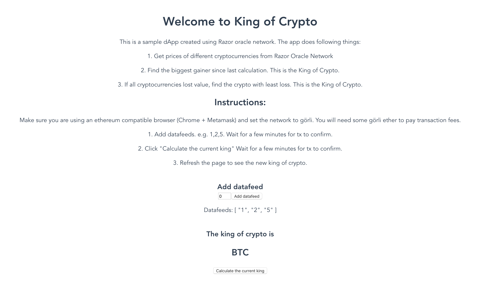
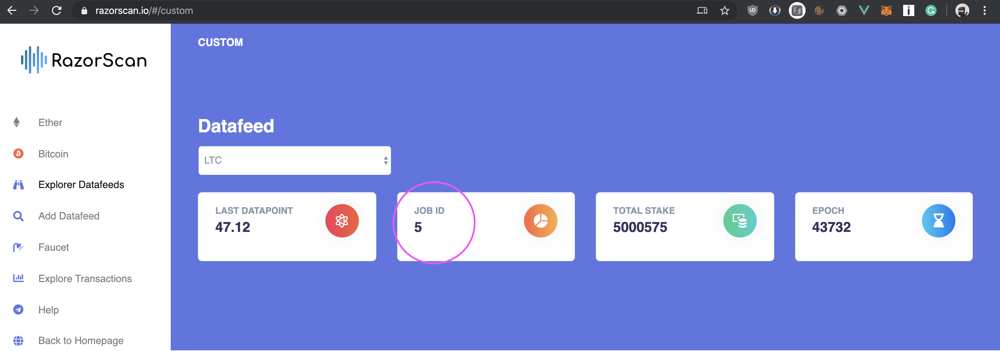

Tutorial - Görli
In this tutorial we will explore how to use Razor Oracle network in your applications. We will create an application called "King of Crypto" using Razor network. The code for this sample app is available at https://github.com/razor-network/king-of-crypto

Network
These instructions are for deploying the dApp on görli testnet. Please click below if you want to deploy on a different network.
Setting up the Smart Contracts
We will be using truffle to set up, compile and deploy the smart contracts. Truffle can be installed by
npm i -g truffle
Create a new directory and type:
truffle init
This will setup a new truffle project.
Go to the contracts subdirectory and create a new file called King.sol
The smart contract has the following functionality:
-
Get prices of different cryptocurrencies from Razor Oracle Network.
-
Find the biggest gainer since last calculation. This is the new King of Crypto.
-
If all cryptocurrencies lost value, find the crypto with least loss. This is the new King of Crypto.
Paste the following code in that file.
pragma solidity 0.6.11;
interface Razor {
function getResult(uint256 id) external view returns (uint256);
function getJob(uint256 id) external view returns(string memory url, string memory selector, string memory name, bool repeat, uint256 result);
}
contract King {
Razor public razor;
uint256[] public jobs;
uint256 public numJobs = 0;
uint256 public king = 0;
uint256[] public lastResults;
constructor() public {
razor = Razor(0x5E164F3eD15d3a0eC27cDde58A2538323c549BB9);
}
function addFeed(uint256 jobId) public {
jobs.push(jobId);
numJobs = numJobs + 1;
lastResults.push(0);
}
function findKing() public {
uint256 highestGain = 0;
uint256 highestGainer = 0;
uint256 leastLoss = 0;
uint256 leastLoser = 0;
for(uint256 i = 0; i < jobs.length; i++) {
uint256 price = razor.getResult(jobs[i]);
if(price > lastResults[i]) {
if(price - lastResults[i] > highestGain) {
highestGain = price - lastResults[i];
highestGainer = jobs[i];
}
} else if(price < lastResults[i]) {
if(lastResults[i] - price < leastLoss) {
leastLoss = lastResults[i] - price;
leastLoser = jobs[i];
}
}
lastResults[i] = price;
}
if (highestGain > 0) {
king = highestGainer;
} else if (leastLoss > 0) {
king = leastLoser;
}
}
}
Please note that we frequently redeploy the testnet to speed up the development process. Please make sure to replace the Delegator address with the latest delegator address from ADDRESSES.md
A datafeed can be added to the contract using the addFeed() function.
This function requires a "Job ID", also known as the datafeed ID. You can know the available datafeeds and their ID by exploring https://razorscan.io/#/custom

The instructions to create a new datafeed can be found Here
The following line fetches result from Razor Oracle Network for the relevent datafeed Id.
uint256 price = delegator.getResult(jobs[i]);
Set up the migration
Create a new file called 2_deploy.js in the migrations director and paste the following code. This will tell truffle how to deploy the contract on the network.
var King = artifacts.require('./King.sol')
module.exports = async function (deployer) {
deployer.then(async () => {
await deployer.deploy(King)
})
}
Set up the truffle configuration
Razor network testnet is currently deployed on Görli ethereum test network. So please make sure you are deploying the contract on görli testnet.
Use an ethereum wallet such as MyEtherWallet or MyCrypto to create a new wallet with 12-word mnemonic phrase.
Create a new file called .secret in the root of the project and paste the above mnemonic phrase. Fund this ethereum wallet with görli ether obtained from a faucet such as https://goerli-faucet.slock.it/
You can set up truffle configuration as it suits you. You can see this file for reference. truffle-config.js
Deploy the Contracts
Type the following command to deploy the contracts on görli testnet.
truffle migrate --network goerli
Setting up the frontend using Vue
We will be using Vue to create a UI for the application. React or any other javascript framework can also be used alternatively.
Vue cli can be installed by
npm install -g @vue/cli
In the root of the project, type the following command. Choose default options.
vue create king
This will create a new directory king with a blank vue project.
Create a common.js file as shown here. Make sure to replace the delegator address as seen in ADDRESSES.md.
The getJob function in common.js shows how to get details of a datafeed in javascript directly from Razor Network Oracle.
Modify the components/HelloWorld.vue file as shown here
You can run the dApp by using the following command
npm run dev
Instructions for using the dApp
Make sure you are using an ethereum compatible browser (Chrome + Metamask) and set the network to görli. You will need some görli ether to pay transaction fees.
- Add datafeeds. e.g. 1,2,5. Wait for a few minutes for tx to confirm.
- Click "Calculate the current king" Wait for a few minutes for tx to confirm.
- Refresh the page to see the new king of crypto.